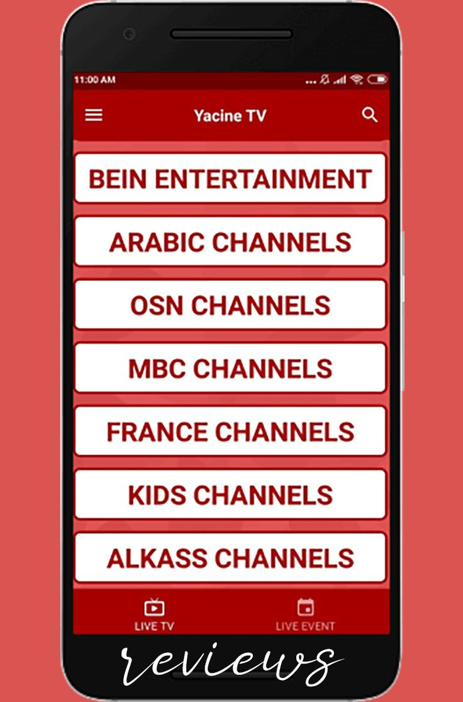
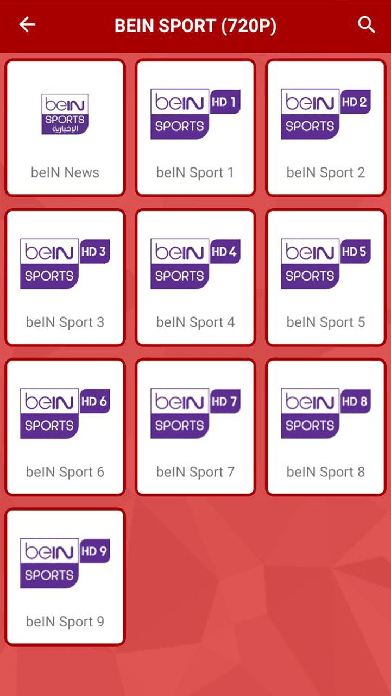
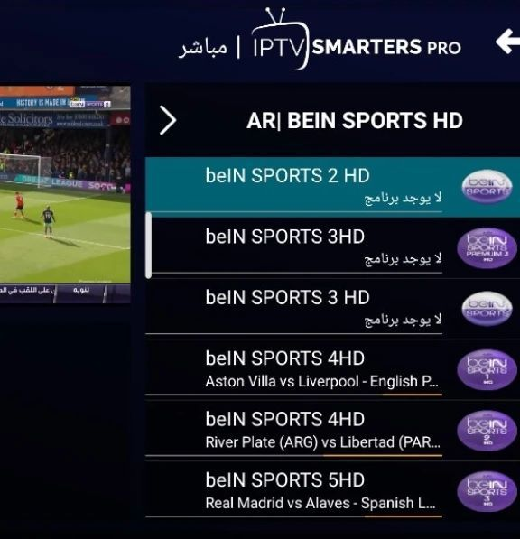

Regardez vos chaînes TV préférées en direct sur mobile
Yacine TV est une application qui permet de regarder en streaming direct les chaînes TV arabes et internationales, idéale pour ne rien manquer où que vous soyez.
Fonctionnalités clés
- Streaming en direct de nombreuses chaînes
- Interface simple et rapide
- Mises à jour fréquentes des liens
- Compatible Android et iOS
Captures d’écran


